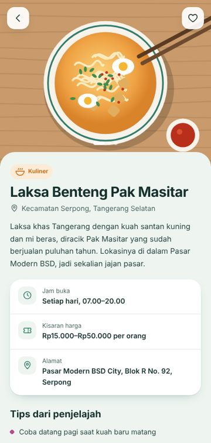
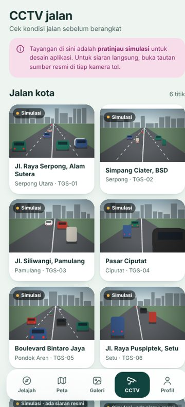

Hidden gem terkurasi
Situ, taman, spot foto, dan tempat main anak, lengkap dengan tips dari penjelajah.
ExploreTangsel mengumpulkan hidden gem di tujuh kecamatan Tangerang Selatan: wisata alam, taman, kuliner warga, dan cara sampai ke sana naik KRL, ojek, atau mobil.
Dibuat untuk warga dan pengunjung yang bosan dengan tempat itu-itu saja.
Situ, taman, spot foto, dan tempat main anak, lengkap dengan tips dari penjelajah.
Lihat semua tempat di peta, urutkan dari yang terdekat, lalu buka petunjuk arah.
Dari laksa benteng di Pasar Modern BSD sampai kue khas Lengkong.
Stasiun KRL terdekat untuk tiap tempat dan tautan CCTV ruas tol di sekitar Tangsel.


Lokasi dan foto kunjunganmu tetap di perangkatmu. Kami tidak menjual data dan tidak memasang iklan pelacak.